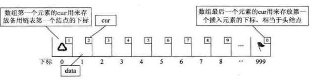
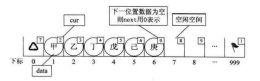
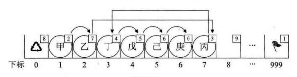
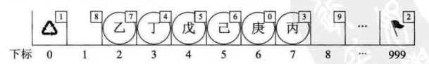

数据结构-静态链表
1、静态链表的简介
在一些早期的编程语言，由于没有指针的概念，有人想到了用数组来实现单链表的方法，改进了顺序存储结构中插入和删除操作需要移动大量元素的缺点。实现逻辑简单来说，是让数组的元素由两个数据域组成，data和cur。数组的每个下标都对应一个数据存放域data和一个游标cur。游标cur相当于单链表中的next指针，存放该元素的后继在数组中的下标，从而用游标来记录每个元素的顺序。所以，用数组描述的链表叫做静态链表。
2、静态链表的储存结构
1 |
|
3、静态链表的初始化

当静态链表为空时，头结点指向的备用链表的第一个元素(也就是空结点链表)下标为1，尾结点指向的第一个插入元素下标为0。

当静态链表装填了6个数据时，头结点指向的备用链表的第一个元素(也就是空结点链表)下标为7，尾结点指向的第一个插入元素下标为1。
1 | /** |
4、静态链表的插入

当一个新元素被填装到静态链表里，通过插入位置前置元素游标和新元素游标的改变，使得该元素被连接到静态链表的任意位置中。
1 | /** |
5、静态链表的删除

当一个元素从静态链表删除时，通过删除位置前置元素游标和删除元素游标的改变，使得该元素被从静态链表中解除，并将该删除元素使用头插法连接到头结点索引的备用链表中。该元素会在分配空间向量时优先被使用。
1 | /** |
6、静态链表优缺点
优点: 在插入和删除操作时，只需要修改游标，不需要移动元素，从而改进了顺序存储结构中插入和删除操作需要移动大量元素的缺点。
缺点: 没有解决连续存储分配带来的表长难以确定的问题；失去了顺序存储结构随机存取的特性。